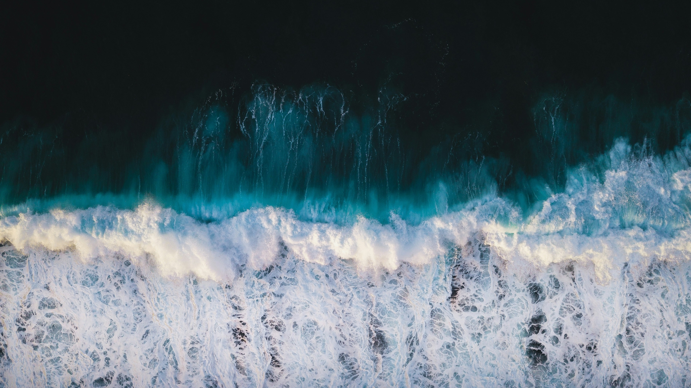
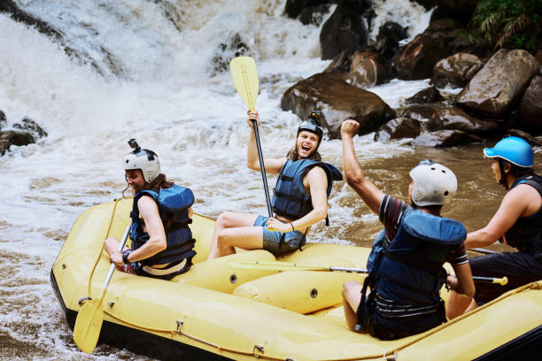
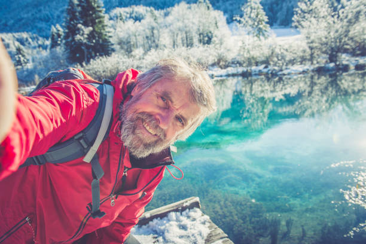
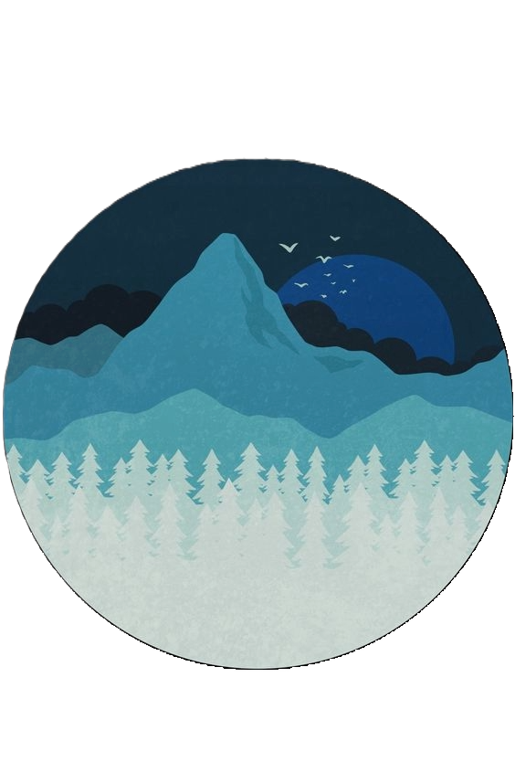
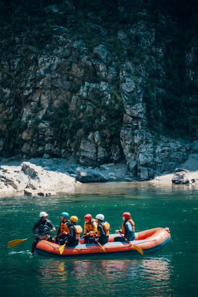
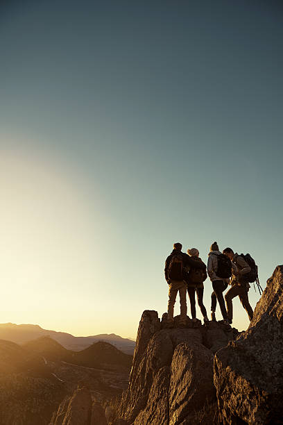

White Water Rafting

Overview
White Water Rafting offers thrilling water adventures in stunning natural
environments. As leaders in rafting, we provide safe and exciting experiences
for everyone, from beginners to experts. With passionate guides, exceptional
customer service, and a commitment to fun and safety, we're here to make
every journey unforgettable. Embark on the adventure with White Water Rafting
and discover the thrill of the rapids!

Purpose
Facilitate unforgettable nature experiences by providing exciting and
safe rafting adventures. We are committed to inspiring and connecting
people of all ages with the beauty of water environments, fostering fun,
camaraderie, and environmental respect. Through our online presence,
we aim to spread the passion for rafting and build an active community of adventure enthusiasts,
offering information, inspiration, and easy access to our thrilling excursions.

Audience
Are you craving thrills and fun in nature? Experience the adrenaline of rafting with us!
Are you looking for a unique team-building experience while tackling exciting waters? Join our next rafting adventure!
Ready to immerse yourself in the scenic beauty of rivers while enjoying the thrill of rafting? Book your spot now and live the adventure!
Empower thrill-seekers and nature enthusiasts with unforgettable rafting adventures.
Our mission is to provide exhilarating and secure experiences that resonate with individuals seeking excitement,
camaraderie, and a deep connection with the beauty of water environments.
Explore Your Options



